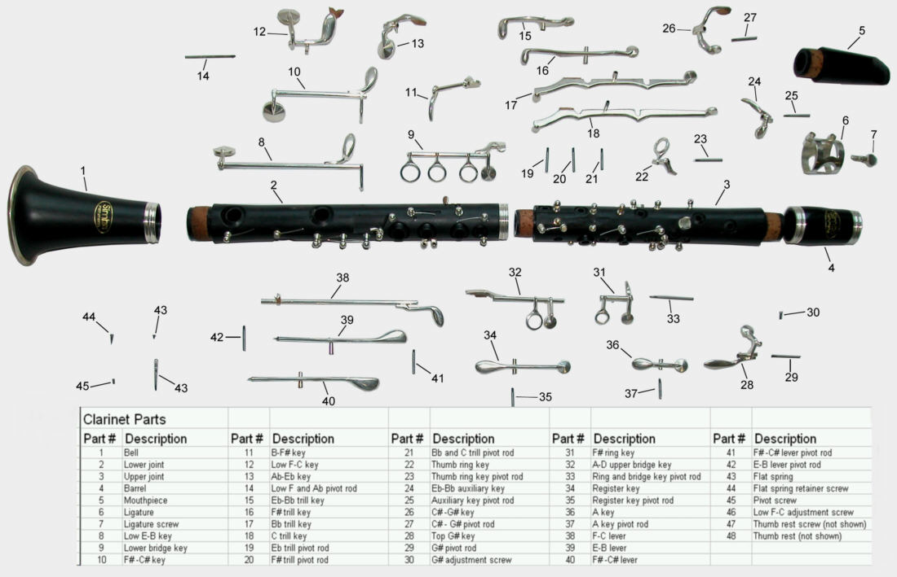

The Clarinet
The clarinet is a musical instrument in the woodwind family. The name derives from adding the suffix -et, meaning little, to the Italian word clarino, meaning a particular trumpet, as the first clarinets had a strident, but pleasing tone similar to that of a trumpet. The instrument has an approximately cylindrical bore, and uses a single reed. The clarinet produces a warm, rich tone favored by many composers. Sometimes, the clarinet will get the melody and sometimes even solos. The clarinet is in B-flat, meaning the notes on the staff come out a whole step lower. The clarinet family consists of the piccolo clarinet clarinet in A-flat; soprano clarinets in E-flat, D, C, B-flat, A and G ( A Clarinets are useful in a symphony as to give the lead clarinet player an easier key signature to work with); basset clarinet in A; basset horn in F; alto clarinet in E-flat; bass clarinet in B-flat; contra-alto clarinet in EE-flat; and contrabass clarinet in BB-flat. In an orchestra, clarinets will either sit on stage left in the front row of winds or in the middle row.
Jokes
Why are there so many clarinets in a concert band?
It increases the chance that one of them will play a right note.